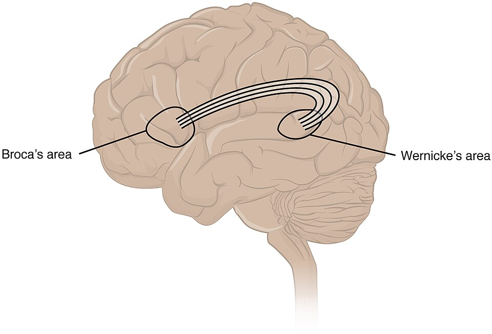
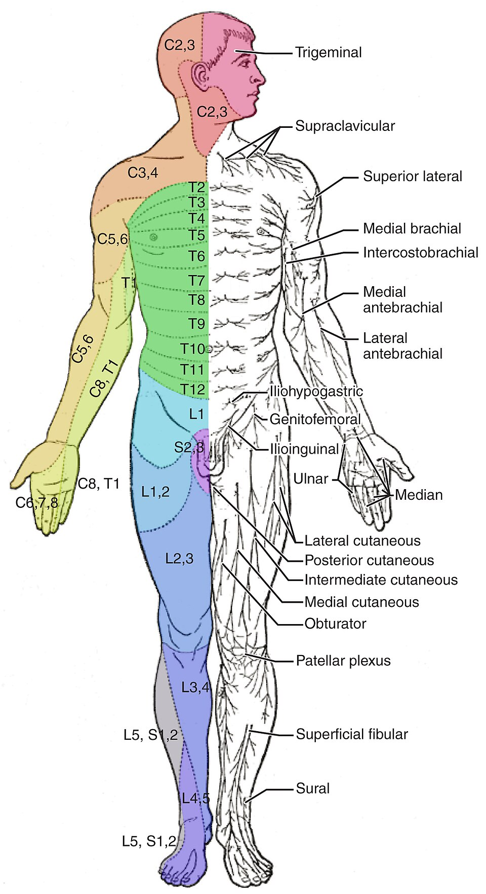
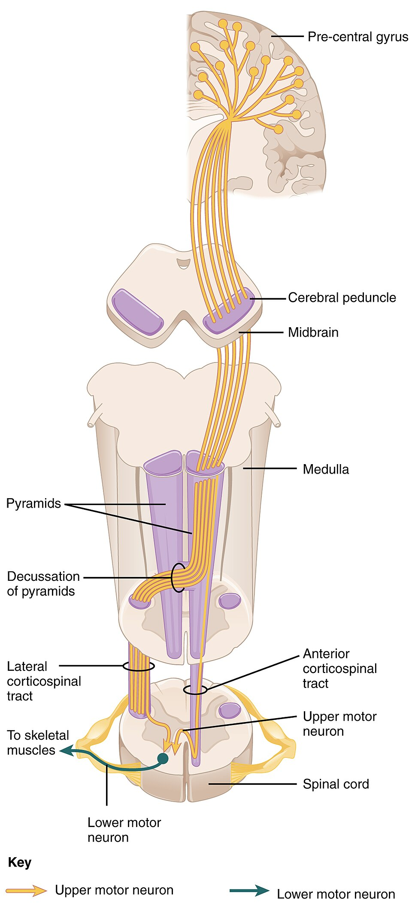
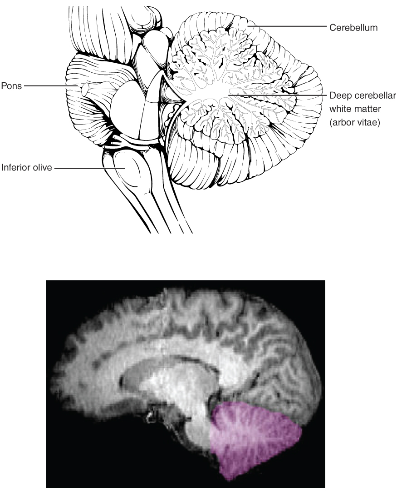

The Neurological Exam
A skilled clinician can find the exact spot where the nervous system has broken — a single nerve, a strip of spinal cord, one side of the brain — using nothing but a pin, a tuning fork, a flashlight, and a set of well-chosen questions. That is the quiet magic of the neurological exam: it turns the outside of a patient into a window on the inside. In this chapter you will walk through its five parts in the same order a clinician does, from the thinking cortex down to the walking feet. Along the way you will learn the single habit that makes it all work — localization, reasoning from a finding back to the piece of the nervous system that produced it.
By the end of this chapter you can
- Explain the purpose of the neurological exam — to localize a lesion at the bedside — and name its five main parts in order.
- Perform the mental status exam and match the major language areas (Broca’s and Wernicke’s) to the specific aphasia that a lesion in each produces.
- List the twelve cranial nerves and describe the quick bedside maneuver that tests each one.
- Use dermatome landmarks to localize a sensory level, and separate the two ascending sensory pathways — the spinothalamic tract and the dorsal columns.
- Grade muscle strength on the 0–5 scale and distinguish upper from lower motor neuron weakness.
- Carry out the cerebellar coordination tests and interpret dysmetria, ataxia, and a positive Romberg sign.
- Reason from any single finding back to the region of the nervous system responsible for it.
Section 1The exam, part by part
An exam that localizes
Every other exam in medicine asks what is wrong. The neurological exam adds a second, sharper question: where. Because the nervous system is wired in an orderly, mapped-out way — this region for language, that nerve for the tongue, this strip of skin for one spinal segment — a careful examiner can take a scattering of findings and point to a single place. That skill is called localization, and it is the whole game. A weak right arm plus slurred speech plus a drooping right face localizes to the left side of the brain; a numb band around the belly localizes to a particular level of the spinal cord. The exam is, in a sense, a scanner made of questions — and long before any MRI existed, this is how neurologists found the lesion.
The five parts, from top to bottom
The exam is easiest to remember as a journey down the nervous system, from the highest thinking to the simplest walking. Each part probes a different level, so a deficit in one part tells you roughly where to look.
| Part | What it tests | Localizes to |
|---|---|---|
| 1. Mental status | Consciousness, orientation, memory, language | The cerebral cortex |
| 2. Cranial nerves | Vision, eye movement, face, hearing, tongue — the twelve nerves | The brainstem and the nerves themselves |
| 3. Sensory | Touch, pain, temperature, vibration, position | A spinal nerve, the cord, or a sensory pathway |
| 4. Motor | Strength, tone, muscle bulk (and reflexes) | The motor pathway — upper vs lower motor neuron |
| 5. Coordination & gait | Smoothness, balance, walking | The cerebellum |
Notice how neatly the parts stack. Mental status and language live in the cortex at the top; the cranial nerves emerge from the brainstem in the middle; sensory and motor testing read the long tracts of the spinal cord and the peripheral nerves; and coordination checks the cerebellum tucked at the back. Reflexes are usually folded into the motor exam. Run the parts in order and you have sampled the nervous system from crown to sole.
Tap through the five parts in the interactive and watch each one light up the region it localizes.
- The neuro exam exists to localize a lesion at the bedside, reasoning from a finding back to a region.
- Its five parts — mental status, cranial nerves, sensory, motor, coordination & gait — sample the nervous system top to bottom.
- Each part maps to a level: cortex, brainstem, cord/nerves, motor pathway, and cerebellum.
Section 2Mental status & language

Reading the cortex
The mental status exam checks the highest-order work of the brain — the cerebral cortex. It samples consciousness (is the patient alert?), orientation (do they know person, place, and time?), attention, memory, and, most revealing of all, language. You do not need a formal test to start: a two-minute conversation already tells you whether someone is confused, whether they can find their words, and whether they follow what you say. When something is off, the pattern of the deficit points to a specific patch of cortex, because different jobs live in different places.
The two language areas — and the aphasias
Language is famously lateralized — in nearly everyone it lives in the left hemisphere — and it is split between two areas with two different jobs. Broca’s area, in the frontal lobe just ahead of the motor strip, produces speech: it builds words and grammar. Wernicke’s area, in the temporal lobe near the hearing cortex, comprehends language: it attaches meaning to words. Damage each, and you get a strikingly different aphasia — a loss of language — that tells you exactly which area failed.
| Area | Its job | If damaged |
|---|---|---|
| Broca’s area | Produces speech (words, grammar) | Broca’s (expressive) aphasia — slow, effortful, telegraphic speech; comprehension is intact, and the patient knows it is wrong and is frustrated |
| Wernicke’s area | Comprehends language (meaning) | Wernicke’s (receptive) aphasia — fluent but meaningless “word salad”; comprehension is lost, and the patient often does not realize anything is wrong |
| Prefrontal cortex | Executive function — judgment, planning, personality, impulse control | Disinhibition, poor judgment, personality change (the classic Phineas Gage story) |
| Hippocampus | Forms new long-term memories | Anterograde amnesia — cannot form new memories, though old ones survive |
A quick way to hold the contrast: Broca’s is Broken speech — the words come out laboriously, but the mind behind them is clear and aware. Wernicke’s is Wordy nonsense — the speech flows easily and fluently, but the meaning is gone, both coming in and going out. Testing is simple: to check production, ask the patient to name objects and repeat a phrase; to check comprehension, give a command they must understand (“point to the ceiling, then the door”). To probe short-term memory, name three words and ask for them back a few minutes later — a bedside test of the hippocampus.
Tap each region in the interactive to see the language job it does and the aphasia a lesion there causes.
- The mental status exam reads the cortex — consciousness, orientation, memory, and especially language.
- Language is usually left-lateralized: Broca’s produces speech, Wernicke’s comprehends it.
- Broca’s aphasia = effortful speech, intact understanding, frustrated patient; Wernicke’s aphasia = fluent nonsense, lost understanding, unaware patient.
Section 3The cranial nerve exam

Twelve nerves, twelve tests
Twelve pairs of cranial nerves leave the underside of the brain and serve the head and neck — smelling, seeing, moving the eyes, feeling the face, hearing, tasting, swallowing, speaking, and turning the head. Because most of them arise from the brainstem, testing them one by one is a way of surveying the brainstem from top to bottom. The exam has a rhythm to it: each nerve has a single, quick bedside maneuver, and a failure points straight to that nerve or to the part of the brainstem it comes from.
| Nerve | How it is tested |
|---|---|
| I — Olfactory | Identify a familiar smell (coffee, mint), eyes closed, one nostril at a time |
| II — Optic | Visual acuity (eye chart), visual fields, and the pupil’s reaction to light |
| III — Oculomotor | Pupil constriction to light and most eye movements; a blown pupil or drooping lid (ptosis) implicates CN III |
| IV — Trochlear | Look down and in toward the nose; weakness gives vertical double vision on stairs |
| V — Trigeminal | Facial sensation in three zones; clench the jaw to feel the masseter |
| VI — Abducens | Look laterally (outward); failure means the eye cannot turn out |
| VII — Facial | Smile, raise the eyebrows, puff the cheeks; one-sided droop signals a facial-nerve problem (e.g. Bell’s palsy) |
| VIII — Vestibulocochlear | Hearing (whisper or finger-rub) and balance; tuning-fork tests refine it |
| IX — Glossopharyngeal | The gag reflex and taste at the back of the tongue (tested with CN X) |
| X — Vagus | Say “ahh” — the palate and uvula should rise symmetrically; also voice and swallowing |
| XI — Accessory | Shrug the shoulders and turn the head against resistance (trapezius & SCM) |
| XII — Hypoglossal | Stick out the tongue — it deviates toward the weak (damaged) side |
Small signs, precise meaning
The beauty of the cranial nerve exam is how much a tiny asymmetry can tell you. A tongue that pokes out crooked, drifting toward the bad side, localizes to CN XII on that side. A soft palate that lifts unevenly points to CN X. A pupil that will not shrink to light, paired with a droopy lid, whispers CN III — and in the right setting that is an emergency. Generations of students have kept the twelve nerves in order with the old mnemonic “On Old Olympus’ Towering Tops, A Finn And German Viewed Some Hops” — each first letter marking a nerve from I to XII.
Tap any of the twelve nerves in the interactive to see how it is tested and what a failure would mean.
- The twelve cranial nerves serve the head and neck; most arise from the brainstem, so testing them surveys the brainstem.
- Each nerve has a single quick maneuver — smell, eye chart, jaw clench, “ahh,” shoulder shrug, tongue out, and the rest.
- The tongue (XII) and facial droop (VII) deviate toward the damaged side.
Section 4The sensory exam

Skin comes in strips
Each spinal nerve carries sensation from a specific band of skin called a dermatome. Stacked together, the dermatomes tile the whole body like the stripes of a map, and that map is astonishingly useful: if a patient has numbness in a particular strip, you can read the strip backward to the exact spinal level that supplies it. You do not have to memorize all thirty-odd dermatomes — a handful of reliable landmarks anchors the whole scheme, and the rest fall into place between them.
| Level | Landmark |
|---|---|
| C6 | The thumb and lateral forearm |
| C7 | The middle finger (C7 also drives the triceps) |
| C8 | The little finger and medial forearm |
| T4 | The nipple line |
| T10 | The umbilicus (belly button) |
| L1 | The groin / inguinal region |
| L4 | The medial knee and shin (L4 drives the knee-jerk) |
| L5 | The top of the foot and big toe (L5 dorsiflexes the foot) |
| S1 | The little toe and sole (S1 drives the ankle-jerk) |
Two roads to the brain
Sensation is not one channel but two, and the neuro exam tests them separately because they travel by different routes and cross the midline in different places. Pain and temperature ride the spinothalamic tract, which crosses to the opposite side almost immediately, right within the spinal cord. Fine touch, vibration, and position sense (proprioception) ride the dorsal columns, which stay on the same side all the way up and cross only high in the medulla. Because they cross in different spots, a single cord injury can knock out one sense on one side of the body and the other sense on the other side — a striking pattern that instantly tells you the two pathways are involved.
| Pathway | Carries | Crosses | Tested with |
|---|---|---|---|
| Spinothalamic tract | Pain & temperature | At the cord (right away) | Pinprick, warm/cold |
| Dorsal columns | Touch, vibration, position | In the medulla (high up) | Tuning fork, toe-position |
Tap a landmark in the interactive to pinpoint its spinal level, and compare the two ascending pathways.
- A dermatome is the skin strip served by one spinal nerve; numbness in a strip localizes to that spinal level.
- Landmarks to memorize: C6 thumb, C7 middle finger, C8 little finger, T4 nipple, T10 umbilicus, L1 groin, S1 sole.
- Two pathways: spinothalamic (pain/temp, crosses at the cord) and dorsal columns (touch/vibration/position, crosses in the medulla).
Section 5The motor exam

Grading strength, zero to five
The motor exam begins by measuring strength, muscle group by muscle group, against a standard scale that runs from 0 to 5. The scale is anchored at both ends by the pull of gravity: a grade of 3 is the pivot point, because 3 means the limb can just lift against gravity but not against any added resistance. Above that, muscles hold against your push; below it, they cannot even beat gravity. The scale is worth learning precisely, because writing “4/5” in a chart says something exact that another clinician can act on.
| Grade | What it means |
|---|---|
| 5 | Normal power — full strength against full resistance |
| 4 | Moves against gravity and some resistance, but weaker than normal |
| 3 | Moves against gravity only — can lift the limb, but not against resistance |
| 2 | Moves only with gravity removed (side to side) |
| 1 | A flicker or trace of contraction, no joint movement |
| 0 | No contraction at all — complete paralysis |
Where does the weakness come from?
The motor pathway runs in two relays. The upper motor neuron (UMN) travels from the motor cortex down the corticospinal tract to the spinal cord; the lower motor neuron (LMN) runs from the cord out along a peripheral nerve to the muscle. Weakness can come from either relay — and the exam tells them apart by the company the weakness keeps. UMN damage releases the cord below it, so the muscle becomes spastic and over-reflexive. LMN damage cuts the muscle’s only lifeline, so it goes flaccid, wastes away, and twitches. Reading tone, reflexes, and muscle bulk turns “this arm is weak” into “the lesion is here.”
| Sign | Upper motor neuron | Lower motor neuron |
|---|---|---|
| Location | Brain → spinal cord | Spinal cord → muscle |
| Tone | Increased (spastic) | Decreased (flaccid) |
| Reflexes | Increased (hyper) | Decreased or absent |
| Babinski sign | Present (big toe goes up) | Absent |
| Atrophy | Little, and late | Marked, and early |
| Fasciculations | Absent | Present (visible twitches) |
Slide through the strength scale in the interactive, then switch to compare the two motor-neuron patterns.
- Strength is graded 0–5; grade 3 is the pivot — movement against gravity but no added resistance.
- The pathway has two relays: upper (cortex → cord) and lower (cord → muscle) motor neurons.
- UMN = spastic, hyper-reflexic, Babinski present, little atrophy; LMN = flaccid, hypo-reflexic, early atrophy, fasciculations.
Section 6Coordination & gait

The smoothness check
Strength moves a limb; the cerebellum makes the movement smooth, accurate, and well-timed. The final part of the exam tests that polish. A patient can be perfectly strong yet unable to touch their own nose cleanly, because the cerebellum is what fine-tunes aim and steadies balance. When it fails, movements overshoot, wobble, and stagger — a cluster of signs grouped under the word ataxia. Each cerebellar test isolates one facet of coordination.
| Test | What it checks | Abnormal finding |
|---|---|---|
| Finger-to-nose | Accuracy of aim | Dysmetria (over/undershoot) and an intention tremor that worsens near the target |
| Rapid alternating movements | Reversing a movement smoothly | Dysdiadochokinesia — clumsy, irregular alternation |
| Heel-to-shin | Lower-limb coordination | A wobbling, off-track heel — limb ataxia |
| Romberg test | Proprioception (position sense) | Steady with eyes open but falls with eyes closed — a sensory (dorsal-column) problem |
| Gait | Overall balance and walking | A wide-based, staggering (ataxic) gait points to the cerebellum |
| Pronator drift | Subtle upper-motor-neuron weakness | One arm slowly drifts down and pronates — an early UMN sign |
The Romberg trap
One test in this group is a clever detective, not a cerebellar test at all. In the Romberg test, the patient stands with feet together and closes their eyes. Balance depends on three inputs — vision, the inner ear, and proprioception (the dorsal-column sense of where your limbs are). Take vision away by closing the eyes, and the body must lean on the other two. A patient who is steady with eyes open but sways or falls with eyes closed has a positive Romberg — and that points to a sensory (dorsal-column) problem, not the cerebellum. A true cerebellar patient is unsteady either way, because the cerebellum never depended on the eyes to begin with. It is a small test that neatly separates two very different causes of imbalance.
Tap each test in the interactive to see what an abnormal result reveals.
- The cerebellum makes movement smooth and accurate; its failure produces ataxia — dysmetria, intention tremor, and a wide-based gait.
- Key tests: finger-to-nose, rapid alternating movements, heel-to-shin, gait, and pronator drift.
- A positive Romberg (falls only with eyes closed) is a proprioceptive/dorsal-column sign, not a cerebellar one.
The chapter in one breath
- The neuro exam exists to localize a lesion at the bedside, in five parts that sample the nervous system top to bottom.
- Mental status reads the cortex; language is left-lateralized, with Broca’s (effortful speech, aware patient) and Wernicke’s (fluent nonsense, unaware patient) aphasias.
- The twelve cranial nerves survey the brainstem, each with one quick maneuver; the tongue and facial droop deviate toward the lesion.
- A dermatome localizes a sensory level (T4 nipple, T10 umbilicus, S1 sole); pain/temperature travel the spinothalamic tract, touch/vibration/position the dorsal columns.
- Strength is graded 0–5; upper motor neuron lesions are spastic and hyper-reflexic with a Babinski, while lower are flaccid, wasted, and twitchy.
- The cerebellum gives movement its smoothness; its failure is ataxia, and a positive Romberg is a sensory sign, not a cerebellar one.
- Every finding is a clue to a place — the whole exam is the art of reasoning from a sign back to a region.
ReferenceWords worth knowing
A quick reference for the terms in this chapter — skim it now, or circle back whenever a word trips you up.
- Aphasia
- A loss or impairment of language caused by damage to a language area of the cortex; the type depends on which area failed.
- Ataxia
- Uncoordinated, clumsy movement — overshooting, wobbling, and staggering — typically from cerebellar dysfunction.
- Babinski sign
- Upward movement of the big toe when the sole is stroked; a sign of an upper motor neuron lesion in adults (and normal in infants).
- Broca’s area
- The frontal-lobe region that produces speech; damage causes an effortful, telegraphic expressive aphasia with intact comprehension.
- Cranial nerves
- The twelve paired nerves that leave the underside of the brain to serve the head and neck.
- Decussation
- The crossing of a nerve pathway from one side of the body to the other (for example, the dorsal columns crossing in the medulla).
- Dermatome
- The strip of skin whose sensation is carried by a single spinal nerve; the dermatomes tile the body as a localizing map.
- Dorsal columns
- The ascending pathway for fine touch, vibration, and position sense; it crosses high in the medulla.
- Dysdiadochokinesia
- Clumsy, irregular rapid alternating movements — a cerebellar sign.
- Dysmetria
- Inaccurate reach — overshooting or undershooting a target — seen on finger-to-nose testing in cerebellar disease.
- Flaccid
- Limp, with decreased muscle tone; characteristic of a lower motor neuron lesion.
- Localization
- Reasoning from the pattern of exam findings back to the specific region of the nervous system responsible.
- Lower motor neuron (LMN)
- The neuron running from the spinal cord out along a peripheral nerve to the muscle; damage gives flaccid weakness, atrophy, and fasciculations.
- Mental status exam
- The part of the neuro exam that tests cortical function — consciousness, orientation, attention, memory, and language.
- Pronator drift
- Slow downward drift and inward turning of an outstretched arm with eyes closed; an early sign of upper motor neuron weakness.
- Proprioception
- The sense of where one’s limbs and body are in space, carried by the dorsal columns and tested by the Romberg maneuver.
- Romberg test
- Standing with feet together and eyes closed; a fall indicates a proprioceptive (dorsal-column) deficit, not a cerebellar one.
- Spasticity
- Increased muscle tone and resistance to movement; characteristic of an upper motor neuron lesion.
- Spinothalamic tract
- The ascending pathway for pain and temperature; it crosses to the opposite side almost immediately, within the spinal cord.
- Upper motor neuron (UMN)
- The neuron running from the motor cortex down the corticospinal tract to the cord; damage gives spastic weakness, brisk reflexes, and a Babinski sign.
- Wernicke’s area
- The temporal-lobe region that comprehends language; damage causes fluent but meaningless speech with lost understanding.